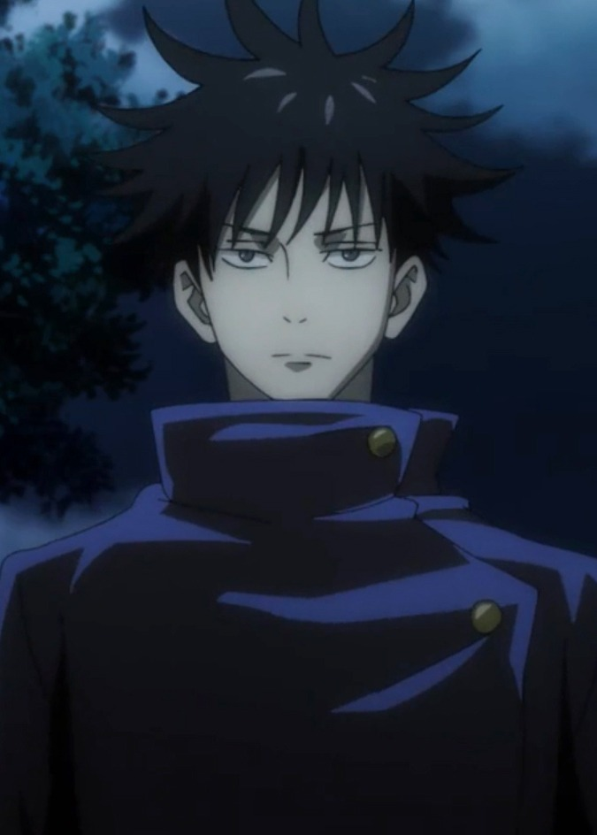
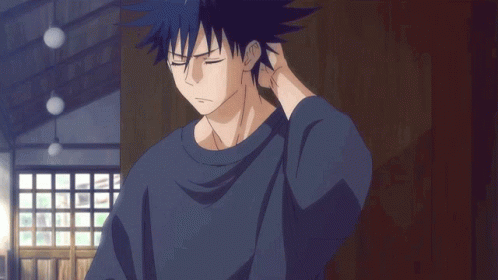
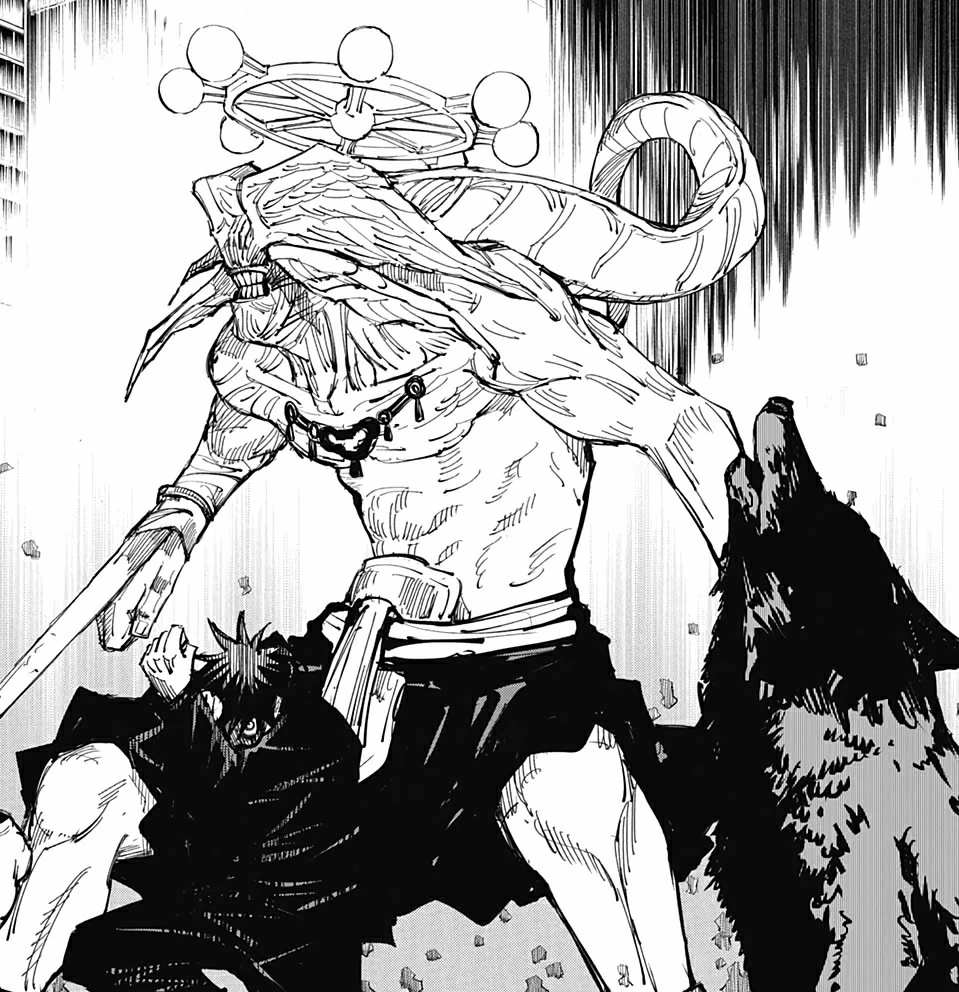
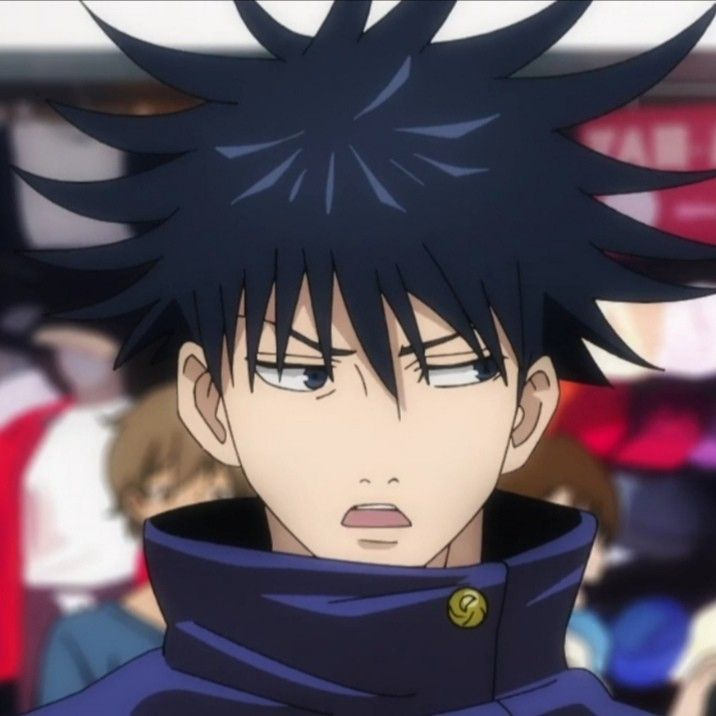
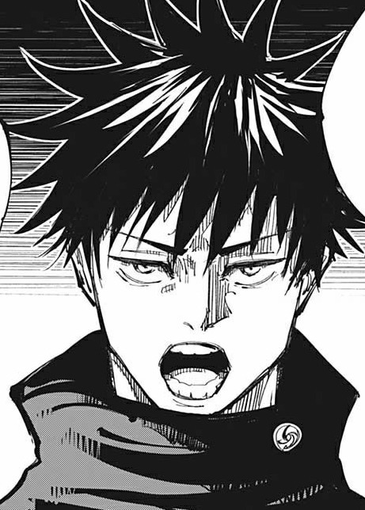
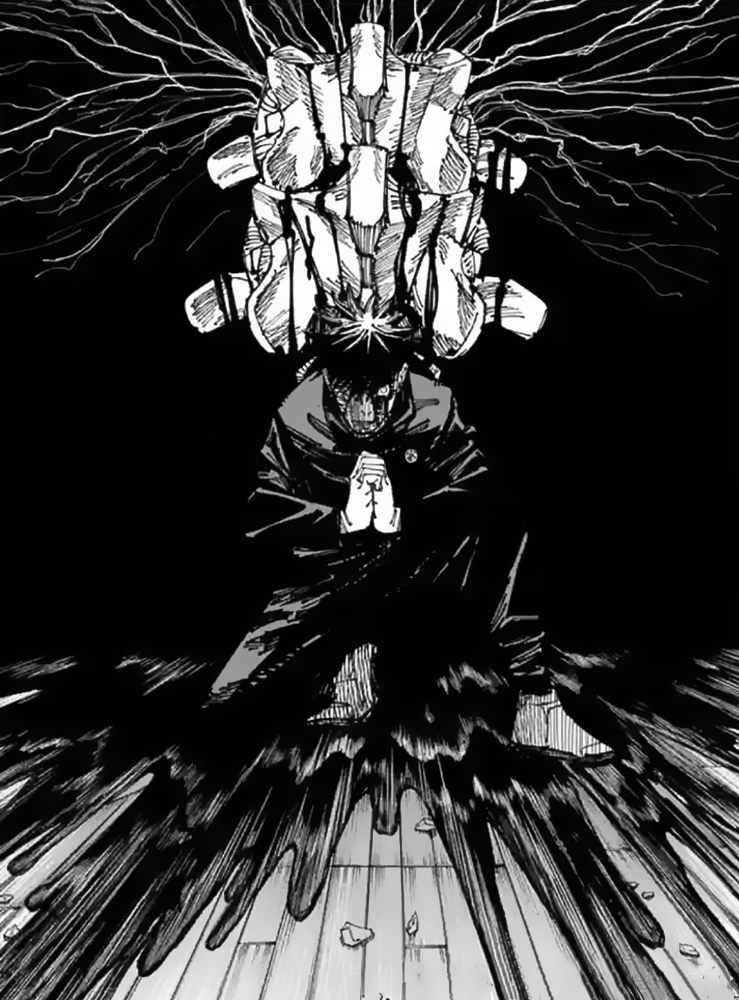

¿Quién es?
Megumi Fushiguro es uno de los protagonistas centrales de Jujutsu Kaisen. Como hijo de Toji Fushiguro, nació con la Técnica de Sombras de Diez Tipos, la habilidad más prestigiosa del Clan Zenin. Pese a su linaje, fue criado bajo la tutela de Satoru Gojo tras un acuerdo que evitó que fuera vendido al clan.
A lo largo de la historia, Megumi evoluciona de ser un hechicero que se autolimita a uno capaz de desplegar un Dominio incompleto. Su papel se vuelve trágico al ser poseído por Sukuna, quien lo utilizó como su nuevo recipiente para obtener el control de Mahoraga. Finalmente, sobrevive a la batalla de Shinjuku y retoma su vida junto a Itadori y Nobara.
Apariencia

Megumi mide 1,75 m y posee un característico cabello oscuro y puntiagudo que Akutami describe como "errático". Un detalle notable es que sus ojos son verde claro en el manga, pero se representaron azules en la adaptación al anime.
Su uniforme del Colegio Técnico es oscuro con cuello alto y zapatos marrón oscuro. En su tiempo libre, prefiere ropa holgada y cómoda. Tras los eventos con Sukuna, su cuerpo muestra el desgaste físico de haber albergado al Rey de las Maldiciones durante la confrontación final.
Personalidad

Es un joven estoico, serio y profundamente reflexivo. A diferencia de Itadori, Megumi no se ve a sí mismo como un héroe; su objetivo es salvar a las personas que él considera "buenas" por una cuestión de deseo egoísta e irracional.
Su pasado como "delincuente" en la secundaria —donde solía pelear con matones— se transformó en una actitud protectora hacia su hermanastra Tsumiki. Aunque parece distante, valora profundamente a sus compañeros, permitiéndose incluso seguir las bromas de Itadori y Nobara.
Habilidades
Técnica de Sombras de Diez Tipos
Permite invocar hasta diez shikigamis diferentes usando las sombras como intermediario.
Lobos de Jade (Totalidad)
Tras la destrucción del lobo blanco, el lobo negro heredó su poder, creando una versión bípeda de grado especial.
Quimera (Nue)
Shikigami volador que lanza ataques eléctricos y sirve para transporte.
Mahoraga
Capaz de adaptarse a cualquier fenómeno. Ningún usuario de la técnica lo había domado antes que Sukuna.

Expansión de Dominio
Jardín Azabache de las Quimeras. Inunda el área con sombras, permitiendo invocaciones infinitas y clones.
Combate Físico
Entrenado por Maki y Gojo en artes marciales y el uso de herramientas malditas como nunchakus.
Imágenes de Megumi



Curiosidades
Cumpleaños
22 Dic
Edad
15 años
Lugar de nacimiento
Prefectura de Saitama
- ▸ Le gusta leer libros de no-ficción y su comida favorita es la que lleva jengibre.
- ▸ No respeta a Toge Inumaki porque siempre se une a las bromas de Gojo y Panda.
- ▸ Tiene una memoria excelente; recordó el nombre de una excompañera de inmediato en el Cap. 56.
- ▸ Su mayor estrés son "los humanos (casi todos)".
Última actualización de esta página: